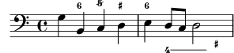

| [ << Ancient notation ] | [Top][Contents] | [ World music >> ] |
| [ < Ancient notation ] | [ Up: Ancient notation ] | [ Ancient fonts > ] |
Adding a figured bass above or below the notes
When writing figured bass, you can place the figures above or below the
bass notes by using the commands \bassFigureStaffAlignmentDown
and \bassFigureStaffAlignmentUp. Prepend \once to the
command if you want to modify only the next figured bass.
The command \bassFigureStaffAlignmentNeutral resets the
direction of figured bass to the default value.
bass = { \clef bass g4 b, c d | e d8 c d2 } continuo = \figuremode { <_>4 <6>4 <5/>4 \bassFigureStaffAlignmentUp <_+>4 <6> | \set Staff.useBassFigureExtenders = ##t \bassFigureStaffAlignmentDown <4>4. <4>8 <_+>4 } \score { << \new Staff = bassStaff \bass \context Staff = bassStaff \continuo >> }

| [ << Ancient notation ] | [Top][Contents] | [ World music >> ] |
| [ < Ancient notation ] | [ Up: Ancient notation ] | [ Ancient fonts > ] |